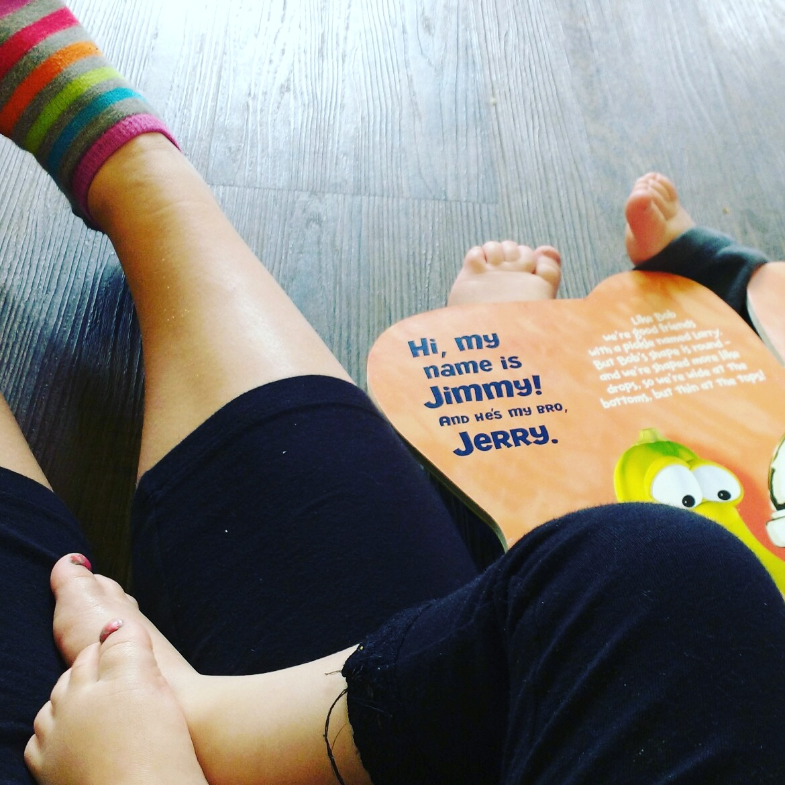
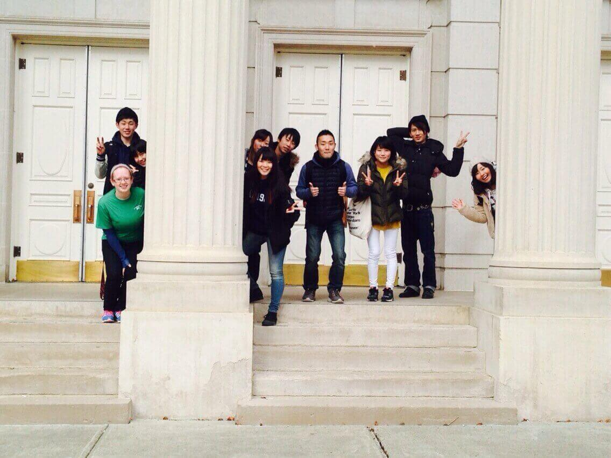
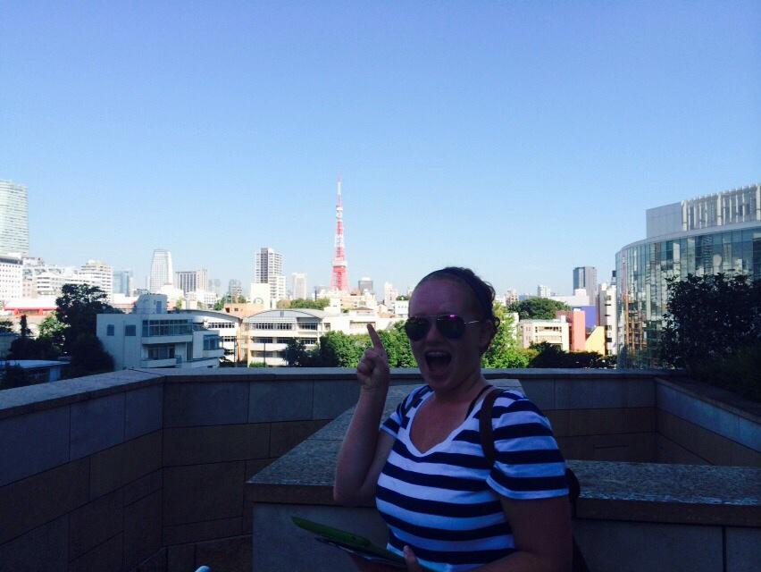

>
>
Hi! I'm a VCD major and interested in learning anything and everything. I bounced around a lot prior to landing back in school, and have been excited to see where VCD will lead me! I dream of traveling and capturing the vast variety of cultures accross the states and the world.

After graduating high school I have had several unique jobs that have helped me in my goal in becoming a jack-of-all-trades. My first job was at a daycare. I called myself "Cinderella" mostly because I did all the jobs that no one else wanted to do.
I loved it.

Maybe I was just making the best of a crappy situation (literally sometimes) but I enjoyed the time I got to spend with the kids and enjoying the way they see the world. My next job was working as an International Peer Advisor with Asian University American Program. I was able to begin learning the Japanese language and culture, and later was given to opportunity to go to Japan.

Upon my return to America I got another job working with Japanese students, but this time I was teaching on top of living with them and leading them through American Culture's idiosyncrasies.
Currently I am working at a resturant and using my time there to understand the intricate details of the company I work for. Who knows!? Maybe someday I'll get into buisness with someone and have my own little resturant!
>